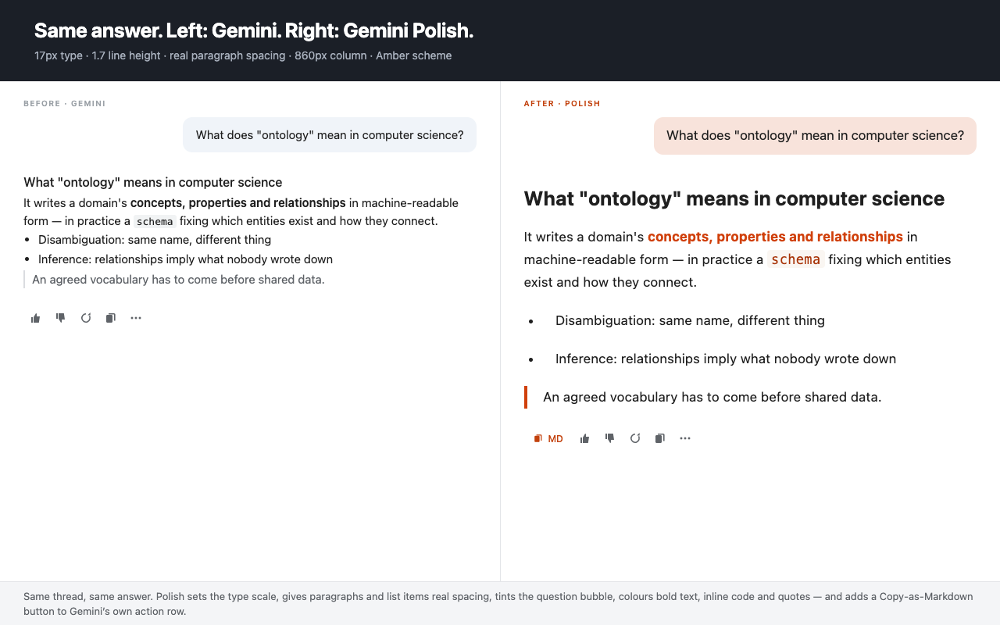
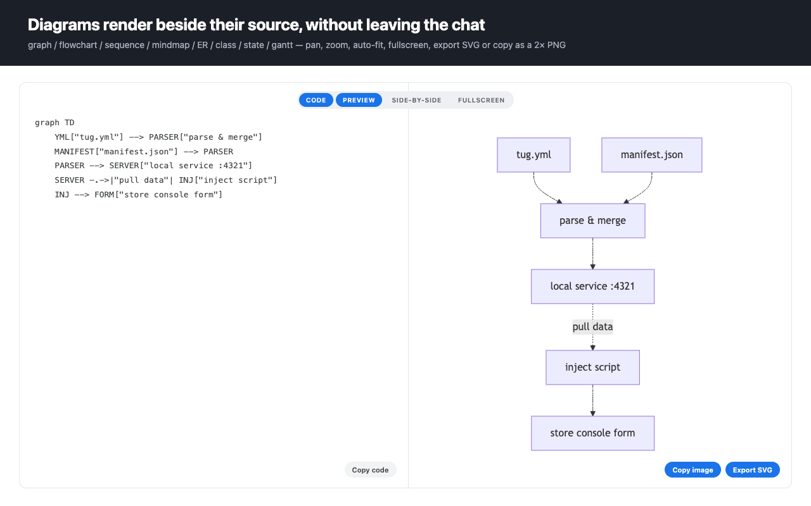
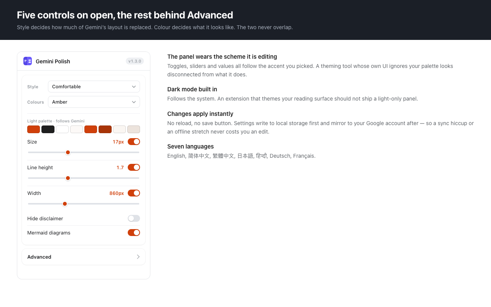

Sie sind nicht allein. Viele Benutzer finden die native Google-Gemini-Benutzeroberfläche schwer lesbar. Zwischen dem Mangel an richtiger Typografie und ungerenderter Mermaid-Syntax kann das Lesen langer KI-Antworten schnell zu einer Belastung der Augen führen. Gemini Polish behebt dies vollständig.
Wenn Sie das Gefühl haben, dass das Textlayout von Gemini zu breit oder schlecht beabstandet ist, bieten unsere professionellen Schriftarten und optimierten Zeilenhöhen ein ablenkungsfreies, augenfreundliches Leseerlebnis.
Hören Sie auf, auf rohen Mermaid-Code zu starren. Betrachten Sie KI-generierte Sequenzdiagramme, Flussdiagramme und Gantt-Diagramme sofort in einem hochauflösenden Split-View-Renderer.
Hauchen Sie Ihrem KI-Arbeitsbereich Leben ein. Wir verbessern die Syntaxhervorhebung und die Hintergrundfarben von Gemini, sodass sich das Auswerten von Codeblöcken wie die Verwendung einer Premium-IDE anfühlt.
Verabschieden Sie sich von engem Text und schrecklichen Codeblöcken. Gemini Polish überarbeitet die Leseoberfläche komplett mit einem ultra-breiten Container, professioneller Syntaxhervorhebung und nativen CJK-Typografie-Optimierungen (PingFang, Hiragino), damit Sie Code ohne Augenbelastung lesen können.

Wenn Gemini rohen Markdown-Code für Diagramme ausgibt, erkennen wir diesen sofort und rendern eine wunderschöne, hochauflösende Vektorgrafik neben dem Chat. Mit nativem Maus-/Trackpad-Zoom und Drag-to-Pan ist die Navigation durch komplexe Softwarearchitekturen ein Kinderspiel.

Passen Sie Ihren Arbeitsbereich an Ihre Stimmung an. Ob Sie einen eleganten Entwickler-Dark-Mode oder ein klares, fokussiertes helles Theme bevorzugen, unsere integrierten Schemata machen die Interaktion mit KI zu einer Freude statt zu einer lästigen Pflicht. Passen Sie das Layout über das Einstellungsfeld genau nach Ihren Wünschen an.

Normalerweise zeigt Gemini rohen Markdown-Code für Diagramme an. Gemini Polish erkennt automatisch die Mermaid-Syntax und bietet einen hochauflösenden Split-View-Diagramm-Renderer direkt in Ihrem Chat-Fenster.
Ja! Diese Browser-Erweiterung ist nicht nur ein leistungsstarkes KI-Diagramm-Tool, sondern fungiert auch als vollständige Theme-Engine. Sie verbessert die Standard-Typografie, die Syntaxhervorhebung von Codeblöcken und das gesamte Leselayout von Google Gemini für ein besseres Benutzererlebnis.
Absolut. Unsere professionellen Interaktionsfunktionen umfassen Trackpad-Zoom, Drag-to-Pan und Vollbild-Umschaltungen, was es zum perfekten Visualizer für komplexe Softwarearchitekturen, Sequenzdiagramme und Flussdiagramme macht, die von KI generiert wurden.
Ja! Ein großes Problem mit der nativen Gemini-Benutzeroberfläche ist die schlechte Schriftwiedergabe für asiatische Sprachen. Wir erzwingen strenge Schriftart-Fallbacks (PingFang, Hiragino, Malgun Gothic), um sicherzustellen, dass chinesische, japanische und koreanische Zeichen auf jedem Betriebssystem perfekt angezeigt werden.